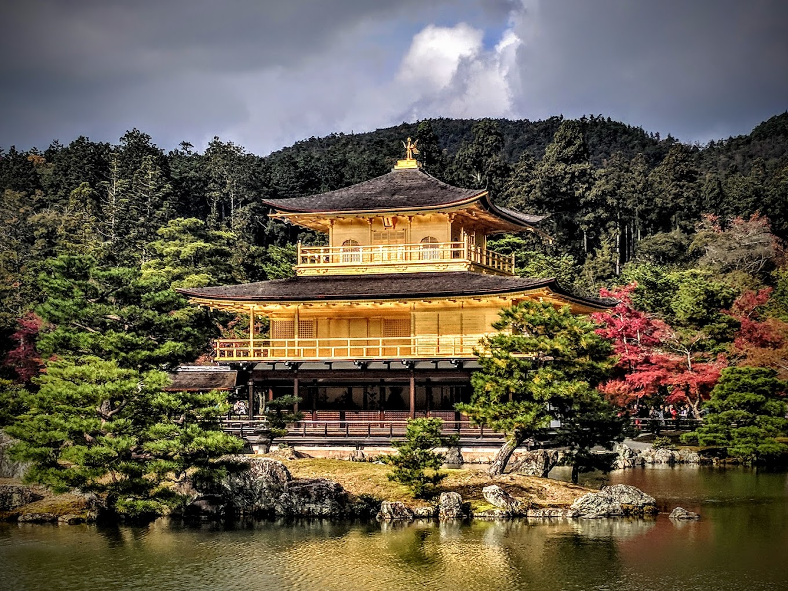

8000+ Our Local Guides

100% Trusted Tour Agency

28+ Years of Travel Experience

|

Kinkaku-ji The site of Kinkaku-ji was originally a villa called Kitayama-dai (北山第), belonging to a powerful statesman, Saionji Kintsune.[5] Kinkaku-ji's history dates to 1397, when the villa was purchased from the Saionji family by shōgun Ashikaga Yoshimitsu and transformed into the Kinkaku-ji complex.[5] When Yoshimitsu died the building was converted into a Zen temple by his son, according to his wishes.Golden Pavilion following the 1950 arson.During the Ōnin war (1467–1477), all of the buildings in the complex aside from the pavilion were burned down.[5]On 2 July 1950, at 2:30 am, the pavilion was burned down[7] by a 22-year-old novice monk. |
Fushimi Inari-taisha is the head shrine of the kami Inari, located in Fushimi-ku, Kyoto, Kyoto Prefecture, Japan. The shrine sits at the base of a mountain also named Inari which is 233 metres above sea level, and includes trails up the mountain to many smaller shrines which span 4 kilometres and take approximately 2 hours to walk up. Inari was originally and remains primarily the kami of rice and agriculture, but merchants and manufacturers also worship Inari as the patron of business. Each of Fushimi Inari-taisha's roughly thousand torii was donated by a Japanese business. Owing to the popularity of Inari's division and re-enshrinement, this shrine is said to have as many as 32,000 sub-shrines throughout Japan. |
Nijō Castle is a flatland castle in Kyoto, Japan. The castle consists of two concentric rings of fortifications, the Ninomaru Palace, the ruins of the Honmaru Palace, various support buildings and several gardens. The surface area of the castle is 275,000 square metres, of which 8,000 square metres is occupied by buildings. It is one of the seventeen Historic Monuments of Ancient Kyoto which have been designated by UNESCO as a World Heritage Site. The castle area has several gardens and groves of cherry and Japanese plum trees. The Ninomaru garden was designed by the landscape architect and tea master Kobori Enshū. It is located between the two main rings of fortifications, next to the palace of the same name. The garden has a large pond with three islands and features numerous carefully placed stones and topiary pine trees. |
|---|

We support all kind of travel ,ticketing to provide Tourist guide.Our company is located in kathmandu nepal near airport
ABOUT US